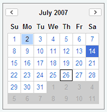

<?php 
$title="Yahoo! UI Library: Calendar";
$section="calendar";
$component="YUI Calendar Control";
$highlightSyntax = true;
$releasenotes = true;
include "../inc/header.inc";
?>

<div id="yui-main">
<div class="yui-b">
  <div class="yui-ge">
      <div class="yui-u first">
<div id="promo" class="component">
	<h1>Yahoo! UI Library: Calendar</h1>
	<p>The Calendar component is a UI control that enables users to choose one or
	  more dates from a graphical calendar presented in a single month or multi month interface.
	  Calendars are generated entirely via script and can be
	  navigated without any page refreshes. </p>
	<p>You'll find the Calendar Control to be a useful and easy-to-implement enhancement to any date-selection interaction; you may also find that the Calendar's foundation classes are a good place to start for more complex interfaces that visually organize date-tagged information (like appointments, photos, events, etc.).</p>
	<div>
    <h4>On This Page:</h4>
    <ul>
      <li><a href="#start">Getting Started</a></li>
      <li><a href="#using">Using Calendar</a></li>
      <li><a href="#mobile">YUI on Mobile Devices</a></li>
      <li><a href="#support">Support &amp; Community</a></li>
      <li><a href="#filingbugs">Filing Bugs and Feature Requests</a></li>
    </ul>
  </div>

<?php
include('../inc/quicklinks.inc');
?>

</div>
  <h2 class="first" id="start">Getting Started</h2>
  <p>To use the Calendar Control, include the JS source files for Calendar and its dependencies in your web page along with the default CSS file, as shown below: </p>
<textarea name="code" class="HTML" cols="60" rows="1">
<!--CSS file (default YUI Sam Skin) -->
<link rel="stylesheet" type="text/css" href="http://yui.yahooapis.com/<?php echo($yuiCurrentVersion);?>/build/calendar/assets/skins/sam/calendar.css">

<!-- Dependencies -->
<script type="text/javascript" src="http://yui.yahooapis.com/<?php echo($yuiCurrentVersion);?>/build/yahoo-dom-event/yahoo-dom-event.js"></script>

<!-- Source file -->
<script type="text/javascript" src="http://yui.yahooapis.com/<?php echo($yuiCurrentVersion);?>/build/calendar/calendar-min.js"></script>
</textarea>
<?php
include "../inc/include-notice.inc";
?>

<h3> Basic HTML/CSS Setup </h3>
<p>For a simple Calendar implementation, the only markup you need on the page is a DIV element into which the Calendar can be rendered:</p>

<textarea name="code" class="HTML" cols="60" rows="1">
<div id="cal1Container"></div>
</textarea>

<p>Before you initialize the Calendar object, the DIV element should already exist in the page's DOM.</p>

<h3> Initializing the Calendar </h3>

<p>
   The Calendar object is defined by <code>YAHOO.widget.Calendar</code>. You create a calendar by instantiating <code>YAHOO.widget.Calendar</code>, passing the constructor at least one argument; 
   the id of (or a reference to) the DIV element on the page into which the control should be inserted. For a single page Calendar, this DIV element should be otherwise empty.
</p>

<textarea name="code" class="JScript" cols="60" rows="1">
// A DIV with id "cal1Container" should already exist on the page
var cal1 = new YAHOO.widget.Calendar("cal1Container");
cal1.render();
</textarea>

<p>The full constructor for Calendar looks like this: </p>
<p><code>YAHOO.widget.Calendar(String id, String|HTMLElement container, Object config)</code></p>
<p>Where:</p>
<dl>
	<dt><code>id</code><dt>
    <dd><em>(optional)</em> Is the ID that should be assigned to the Calendar instance's table element (the table will be created by the Calendar instance when it is rendered). If not provided, the ID will be generated from the container's ID by adding an "_t" suffix</dd>
	<dt><code>container</code></dt>
    <dd>Is the ID of the HTML element where the Calendar will be inserted, or a reference to the element itself (this element must already exist on the page). In the case of an HTMLElement reference being provided, if it does not have an ID one will be generated for it using <code>YAHOO.util.Dom.generateId()</code></dd>
	<dt><code>config</code></dt>
    <dd><em>(optional)</em> Is an object literal representing the Calendar's configuration attributes;</dd>
</dl>
<p>
   <strong>NOTE:</strong> Prior to 2.4.0, the Calendar constructor required at least 2 arguments, id and containerId.
   As of 2.4.0, the calendar constructor has a simpler and more flexible form. The only required argument is the id of the containing HTMLElement (or a reference to the containing HTMLElement) as shown above.
   The older signature, which requires both a calendar id and a container id is still fully supported. You can continue to use it if you need a specific id set on the Calendar.
</p>

<p>The basic single month Calendar, with the default YUI Sam Skin, looks like this:</p>
<p></p>
<p>See a <a href="../examples/calendar/quickstart.html">functional calendar example</a>.</p>

<h2><a name="using"></a>Using Calendar</h2>

  <p>This section describes customizations to the Calendar Control and includes:</p>
  <ul>
      <li><a href="#config">Setting Configuration Options</a></li>
      <li><a href="#2upview">Creating a Multi Month Calendar View</a></li>
      <li><a href="#calendarnavigator">Enabling the Calendar Navigator</a></li>      
      <li><a href="#selecteddates">Obtaining Selected Dates</a></li>
      <li><a href="#internationalization">Creating International Calendars </a></li>
      <li><a href="#behavior">Customizing  the Calendar</a></li>
      <li><a href="#events">Customizing Events</a></li>
  </ul>

<h3>Setting Configuration Options<a name="config"></a></h3>

<p>By default, the Calendar is set to the current month and enables the selection of a single Calendar date. In addition to the HTML IDs described above, Calendar can accept an optional configuration object that allows various configuration attributes to be set. The configuration attributes are passed to the constructor in the form of an object literal. For example:</p>

<textarea name="code" class="JScript" cols="60" rows="1">
  var cal1 = new YAHOO.widget.Calendar(&quot;cal1&quot;,
                                    &quot;cal1Container&quot;,
										{ pagedate:&quot;5/2007&quot;,
										  selected:&quot;5/5/2007-5/27/2007,5/30/2007&quot; } );
  cal1.render();
</textarea>
<p>There are three different ways to set properties for Calendar and CalendarGroup. In the code examples that follow, each of these three approaches is illustrated in setting Calendar's <code>selected</code> property.</p>
<p>
  	<textarea name="code" class="JScript" cols="60" rows="1">
	// 1. In the constructor, via an object literal:
	var myCalendar = new YAHOO.widget.Calendar(&quot;myCalendar&quot;, &quot;myCalendarContainer&quot;, { selected:&quot;1/1/2007-1/7/2007&quot; });
	myCalendar.render();
	</textarea>
	
	<textarea name="code" class="JScript" cols="60" rows="1">
	// 2. Via &quot;queueProperty&quot; and &quot;fireQueue&quot;:
	var myCalendar = new YAHOO.widget.Calendar(&quot;myCalendar&quot;, &quot;myCalendarContainer&quot;);
	myCalendar.cfg.queueProperty(&quot;selected&quot;,&quot;1/1/2007-1/7/2007&quot;,false);
	myCalendar.cfg.fireQueue();
	myCalendar.render();
	</textarea>
	
	<textarea name="code" class="JScript" cols="60" rows="1">
	// 3. Via &quot;setProperty&quot;
	var myCalendar = new YAHOO.widget.Calendar(&quot;myCalendar&quot;, &quot;myCalendarContainer&quot;);
	myCalendar.cfg.setProperty(&quot;selected&quot;,&quot;1/1/2007-1/7/2007&quot;,false);
	myCalendar.render();
	</textarea>
</p>

<p>The following table contains an itemization of Calendar's frequently used configuration properties.  Use the syntax patterns described above in this section to use these configuration properties in your Calendar implementation.</p>
<p><strong>NOTE:</strong> Most visual configuration properties require a call to <code>render</code> before changes become visible, as indicated in the "Render Required" column. This call can either be made explicitly as in the above examples, or the Calendar or CalendarGroup ends up calling it internally, when the page is changed</p>

<div class="apisummary">
  <table>
    <tbody>
      <tr>
        <th>Name</th>
        <th>Type</th>
        <th>Default</th>
        <th>Description</th>
        <th>Render Required</th>
      </tr>
      <tr class="odd">
        <td>pagedate</td>
        <td> String / Date</td>
        <td> Current month </td>
        <td> Sets the calendar's visible month and year. If set using a string, the default string format is &quot;mm/yyyy&quot;. </td>
        <td> Yes</td>
      </tr>
      <tr>
        <td>selected</td>
        <td> String </td>
        <td> null </td>
        <td> Sets the calendar's selected dates.  The built-in default date format is MM/DD/YYYY. Ranges are defined using MM/DD/YYYY-MM/DD/YYYY.
          Month/day combinations are defined using MM/DD. Any combination of these can
          be combined by delimiting the string with commas. For example: &quot;12/24/2005,12/25/2005,1/18/2006-1/21/2006&quot;</td>
        <td> Yes</td>          
      </tr>
      <tr class="odd">
        <td>mindate</td>
        <td> String / Date </td>
        <td> null </td>
        <td> Sets the Calendar's minimum selectable date, either in the form of a Javascript Date object, or a string date (e.g. &quot;4/12/2007&quot;). </td>
        <td> Yes</td>        
      </tr>
      <tr>
        <td>maxdate</td>
        <td> String / Date </td>
        <td> null </td>
        <td>Sets the Calendar's maximum selectable date, either in the form of a Javascript Date object, or a string date (e.g. &quot;4/12/2007&quot;). </td>
        <td> Yes</td>
      </tr>
      <tr class="odd">
        <td>title</td>
        <td> String </td>
        <td> null </td>
        <td> Sets the Calendar's title, displayed at the top of the container. </td>
        <td> No</td>
      </tr>
      <tr>
        <td>close</td>
        <td> Boolean </td>
        <td> false </td>
        <td> When set to true, displays a close icon that can be used to dismiss the Calendar</td>
        <td> No</td>
      </tr>
      <tr class="odd">
        <td>iframe</td>
        <td> Boolean </td>
        <td> true </td>
        <td> Places an iframe shim underneath the Calendar to prevent select elements from bleeding through</td>
        <td> No</td>
      </tr>
      <tr>
        <td> multi_select </td>
        <td> Boolean </td>
        <td> false </td>
        <td> Determines whether the Calendar should allow for the selection of multiple dates</td>
        <td> No</td>
      </tr>
      <tr class="odd">
        <td> navigator </td>
        <td> Boolean / Object </td>
        <td> null </td>
        <td>
             Configures the CalendarNavigator (Year Selector) feature for the Calendar. If set to true, the Calendar's Year Selector functionality is enabled. 
             The CalendarNavigator's configuration can be customized (strings, month format etc.) by setting this property to an object literal as defined in 
             the <a href="../docs/YAHOO.widget.Calendar.html#navigator" title="API Docs">Navigator Configuration Object</a> documentation.
        </td>
        <td> Yes</td>
      </tr>
      <tr>
        <td> show_weekdays </td>
        <td> Boolean </td>
        <td> true </td>
        <td> Determines whether to display the weekday headers </td>
        <td> Yes</td>
      </tr>
      <tr class="odd">
        <td> locale_months </td>
        <td> Array </td>
        <td>&quot;long&quot; </td>
        <td>The format of the month title to be displayed. Possible values are &quot;short&quot;, &quot;medium&quot;, and &quot;long&quot;. </td>
        <td> Yes</td>
      </tr>
      <tr>
        <td> locale_weekdays </td>
        <td> Array </td>
        <td>&quot;short&quot; </td>
        <td>The format of the weekday title to be displayed. Possible values are &quot;1char&quot;, &quot;short&quot;, &quot;medium&quot;, and &quot;long&quot;. </td>
        <td> Yes</td>
      </tr>
      <tr class="odd">
        <td> start_weekday </td>
        <td> Integer </td>
        <td> 0 </td>
        <td>0-6, representing the day that a week begins on</td>
        <td> Yes</td>
      </tr>
      <tr>
        <td> show_week_header </td>
        <td> Boolean </td>
        <td> false </td>
        <td> Determines whether to display row headers </td>
        <td> Yes</td>
      </tr>
      <tr class="odd">
        <td> show_week_footer </td>
        <td> Boolean </td>
        <td> false </td>
        <td> Determines whether to display row footers </td>
        <td> Yes</td>
      </tr>
      <tr>
        <td> hide_blank_weeks </td>
        <td> Boolean </td>
        <td> false </td>
        <td> Determines whether to hide extra weeks that are completely outside the current month </td>
        <td> Yes</td>
      </tr>
      <tr class="odd">
        <td> nav_arrow_left </td>
        <td> String </td>
        <td> IMG_ROOT + &quot;us/tr/callt.gif&quot; </td>
        <td> The image path used for the left navigation arrow.<p>As of version 2.2.0, this property has been deprecated. See <a href="#customimages">Customizing Calendar Images</a></p></td>
        <td> Yes</td>
      </tr>
      <tr>
        <td> nav_arrow_right </td>
        <td> String </td>
        <td> IMG_ROOT + &quot;us/tr/calrt.gif&quot; </td>
        <td> The image path used for the right navigation arrow.<p>As of version 2.2.0, this property has been deprecated. See <a href="#customimages">Customizing Calendar Images</a></p></td>
        <td> Yes</td>
      </tr>
    </tbody>
  </table>
</div>

<h3><a name="2upview"></a>Creating a Multi Month Calendar View</h3>
<p>
    Creating a 2 month Calendar follows the same pattern seen above with the single month Calendar.
    To create a 2 month Calendar, instantiate <code>YAHOO.widget.CalendarGroup</code> using the same arguments documented above for the <code>YAHOO.widget.Calendar</code> constructor.
</p>
<p>
    <code>YAHOO.widget.CalendarGroup(String id, String|HTMLElement container, Object config)</code>
</p>
<p>
   <strong>NOTE:</strong> Prior to 2.4.0, the CalendarGroup constructor also required at least 2 arguments, id and containerId. As of 2.4.0 the CalendarGroup constructor also has a simpler and more flexible format as mentioned above for the Calendar constructor. 
</p>

<p>The 2 Month Calendar, with the default YUI Sam Skin, looks like this:</p>
<p></p>
<p>See a <a href="../examples/calendar/calgrp.html">functional example</a> of the CalendarGroup control which display 3 months together.</p>

<h3><a name="calendarnavigator"></a>Enabling the Calendar Navigator</h3>
<p>
The default Calendar or CalendarGroup UI, does not provide a mechanism to jump directly to a given month/year, which can be useful in applications where the dates, or range of dates, to be selected spans multiple years (e.g. a "Date of Birth" picker).
2.4.0 introduces a <code>navigator</code> configuration option which when enabled, provides a UI to allow the user to directly jump to a given month/year. The navigator is popped up when the user clicks on the Month/Year label.
</p>

<p>The Calendar, with CalendarNavigator displayed, looks like this:</p>
<p></p>

<p>The default implementation allows you to use the arrow up/arrow down and page up/page down keys when focused on the year input box, to increment or decrement the year in minor <em>(1 year)</em> and major <em>(10 year)</em> intervals 
(<strong>NOTE:</strong> The page up/page down functionality is not supported for Opera9 on MacOS, due to an inability to prevent default behavior, but the arrow keys can still be used).<p>

<p>The <a href="../examples/calendar/calnavigator.html">CalendarNavigator functional example</a> walks you through enabling and configuring this feature.</p>

<h3><a name="selecteddates"></a>Obtaining Selected Dates</h3>
<p>Once you have a Calendar or CalendarGroup instance up and running you can obtain the selected dates using the <code>getSelectedDates</code> method. This method returns a sorted array of JavaScript Date objects.</p>
<textarea name="code" class="JScript" cols="60" rows="1">
// Initialize and render the Calendar
var cal1 = new YAHOO.widget.Calendar("cal1Container");
cal1.render();

// Later in your application, when you need the selected dates
var arrDates = cal1.getSelectedDates();
for (var i = 0; i < arrDates.length; ++i) {
	var date = arrDates[i];

	// Work with selected date...
	// var displayMonth = date.getMonth() + 1;
	// var displayYear = date.getFullYear();
	// var displayDate = date.getDate();
}	
</textarea>

<p>Another common way of working with selected dates, especially when responding to user selection, is by listening for the <code>selectEvent</code> event which is discussed in <a href="#events">Customizing Events</a></p>

<p>The <a href="../examples/calendar/formtxt.html">Calendar &amp; Text Fields</a> example uses both the above methods to work with selected dates</p>

<h3>Creating International Calendars <a name="internationalization"></a> </h3>
<p>
The Calendar component has built in support for internationalization. To modify the locale settings, simply set the appropriate configuration attributes:</p>
<textarea name="code" class="JScript" cols="60" rows="1">
var cal1 = new YAHOO.widget.Calendar("cal1","cal1Container");

// Correct formats for Germany: dd.mm.yyyy, dd.mm, mm.yyyy
cal1.cfg.setProperty("DATE_FIELD_DELIMITER", ".");

cal1.cfg.setProperty("MDY_DAY_POSITION", 1);
cal1.cfg.setProperty("MDY_MONTH_POSITION", 2);
cal1.cfg.setProperty("MDY_YEAR_POSITION", 3);

cal1.cfg.setProperty("MD_DAY_POSITION", 1);
cal1.cfg.setProperty("MD_MONTH_POSITION", 2);

// Date labels for German locale
cal1.cfg.setProperty("MONTHS_SHORT",   ["Jan", "Feb", "M\u00E4r", "Apr", "Mai", "Jun", "Jul", "Aug", "Sep", "Okt", "Nov", "Dez"]);
cal1.cfg.setProperty("MONTHS_LONG",    ["Januar", "Februar", "M\u00E4rz", "April", "Mai", "Juni", "Juli", "August", "September", "Oktober", "November", "Dezember"]);
cal1.cfg.setProperty("WEEKDAYS_1CHAR", ["S", "M", "D", "M", "D", "F", "S"]);
cal1.cfg.setProperty("WEEKDAYS_SHORT", ["So", "Mo", "Di", "Mi", "Do", "Fr", "Sa"]);
cal1.cfg.setProperty("WEEKDAYS_MEDIUM",["Son", "Mon", "Die", "Mit", "Don", "Fre", "Sam"]);
cal1.cfg.setProperty("WEEKDAYS_LONG",  ["Sonntag", "Montag", "Dienstag", "Mittwoch", "Donnerstag", "Freitag", "Samstag"]);

cal1.render();
</textarea>

<p>See functional examples of <a href="../examples/calendar/germany.html">German</a> and <a href="../examples/calendar/japan.html">Japanese</a> Calendars.</p>

<p>Calendar supports the following propreties that can be individually configured using the <code>cfg.setProperty</code> method as documented in the code sample above:</p>

<div class="apisummary">
	<table>
	<tbody>
		<tr class="odd"><th> Name </th><th>Type</th><th style="width:25%">Default</th><th>Description</th></tr>

		<tr><td> MONTHS_SHORT </td><td> Array </td><td> English (Jan, Feb, etc) </td>
		<td> 3-letter month names </td>
		</tr>

		<tr class="odd"><td> MONTHS_LONG </td><td> Array </td><td> English (January, February, etc) </td>
		<td> Full month names </td>
		</tr>

		<tr><td> WEEKDAYS_1CHAR </td><td> Array </td><td> English (S, M, etc) </td>
		<td> Single letter weekday names </td>
		</tr>

		<tr class="odd"><td> WEEKDAYS_SHORT </td><td> Array </td><td> English (Su, Mo, etc) </td>
		<td> 2-letter weekday names </td>
		</tr>

		<tr><td> WEEKDAYS_MEDIUM </td><td> Array </td><td> English (Sun, Mon, etc) </td>
		<td> 3-letter weekday names </td>
		</tr>

		<tr class="odd"><td> WEEKDAYS_LONG </td><td> Array </td><td> English (Sunday, Monday, etc) </td>
		<td> Full weekday names </td>
		</tr>

		<tr><td> DATE_DELIMITER </td><td> String </td><td> "," </td>
		<td> String used to delimit multiple dates in a date string </td>
		</tr>

		<tr class="odd"><td> DATE_FIELD_DELIMITER </td><td> String </td><td> "/" </td>
		<td> String used to delimit fields of an individual date </td>
		</tr>

		<tr><td> DATE_RANGE_DELIMITER </td><td> String </td><td> "-" </td>
		<td> String used to delimit the two dates of a date range string </td>
		</tr>

		<tr class="odd"><td> MY_MONTH_POSITION </td><td> Integer </td><td> 1 </td>
		<td> Field position of the month in a month/year date (e.g. "4" in "4/2008")  </td>
		</tr>

		<tr><td> MY_YEAR_POSITION </td><td> Integer </td><td> 2 </td>
		<td> Field position of the year in a month/year date (e.g. "2008" in "4/2008")  </td>
		</tr>

		<tr class="odd"><td> MD_MONTH_POSITION </td><td> Integer </td><td> 1 </td>
		<td> Field position of the month in a month/day date (e.g. "4" in "4/22") </td>
		</tr>

		<tr><td> MD_DAY_POSITION </td><td> Integer </td><td> 2 </td>
		<td> Field position of the day in a month/day date (e.g. "22" in "4/22") </td>
		</tr>

		<tr class="odd"><td> MDY_MONTH_POSITION </td><td> Integer </td><td> 1 </td>
		<td> Field position of the month in a month/day/year date (e.g. "4" in "4/22/2008") </td>
		</tr>

		<tr><td> MDY_DAY_POSITION </td><td> Integer </td><td> 2 </td>
		<td> Field position of the day in a month/day/year date (e.g. "22" in "4/22/2008") </td>
		</tr>

		<tr class="odd"><td> MDY_YEAR_POSITION </td><td> Integer </td><td> 3 </td>
		<td> Field position of the year in a month/day/year date (e.g. "2008" in "4/22/2008") </td>
		</tr>

		<tr><td> MY_LABEL_MONTH_POSITION </td><td> Integer </td><td> 1 </td>
		<td> Position in which the month name is rendered in the Month/Year label in the Calendar header (e.g. "January" in "January 2008") </td>
		</tr>

		<tr class="odd"><td> MY_LABEL_YEAR_POSITION </td><td> Integer </td><td> 2 </td>
		<td> Position in which the year number is rendered in the Month/Year label in the Calendar header (e.g. "2008" in "January 2008") </td>
		</tr>

		<tr><td> MY_LABEL_MONTH_SUFFIX </td><td> String </td><td> " " </td>
		<td> String suffix to render after the month name in the Month/Year label in the Calendar header (e.g. " de " in "Julho de 2008") </td>
		</tr>

		<tr class="odd"><td> MY_LABEL_YEAR_SUFFIX </td><td> String </td><td> "" </td>
		<td> String suffix to render after the year name in the Month/Year label in the Calendar header </td>
		</tr>

	</tbody>
	</table>
</div>

<h3>Customizing the Calendar<a name="behavior"></a></h3>

<h4>Styling Calendar Cells</h4>

<p>
Styling the Calendar is as easy as writing some custom CSS. The Calendar is semantically styled with built-in CSS classes representing the year, month, week, weekday, and day of the month. Each is defined using a basic CSS class name: </p>
<div class="apisummary">
<table width="672" border="0">
  <tbody>
    <tr class="odd">
      <th width="21%"> Field </th>
      <th width="21%">Class Identifier </th>
      <th width="29%" style="width:25%">Format</th>
      <th width="29%">Example</th>
    </tr>
    <tr>
      <td> Year </td>
      <td> y </td>
      <td> yyyy (full year) </td>
      <td> .y2006 </td>
    </tr>
    <tr class="odd">
      <td> Month </td>
      <td> m </td>
      <td>mm (month, 1-12) </td>
      <td>.m7</td>
    </tr>
    <tr>
      <td>Week Number </td>
      <td> w </td>
      <td> ww (week number, 1-52) </td>
      <td> .w6 </td>
    </tr>
    <tr class="odd">
      <td> Weekday </td>
      <td> wd </td>
      <td> w (weekday number, 0-6) </td>
      <td> .wd4 </td>
    </tr>
    <tr>
      <td> Day of Month </td>
      <td> d </td>
      <td> dd (day of month, 1-31) </td>
      <td> .d22 </td>
    </tr>
  </tbody>
</table>
</div>
<p>For instance, the class selector <code>.y2006 .m8 .d22</code> would allow the styling of 8/22/2006 through CSS:</p>

<textarea name="code" class="HTML" cols="60" rows="1">
<style>
.y2006 .m8 .d22 { background-color:yellow }
</style>
</textarea>

<h4>Customizing Calendar Images<a name="customimages"></a></h4>

<p>As of release 2.2.0 all default Calendar images are defined using CSS rules in calendar.css and hence can be modified by simply 
overriding the background property for these default rules. In addition to making it easier to customize Calendar images, this also allows you to refer to 
your images with relative paths and not have to worry about SSL vs. Non-SSL absolute URLs.</p>
<p>The default CSS class selectors used are:</p>
<div class="apisummary">
<table width="672" border="0">
	<tbody>
		<tr class="odd">
			<th width="20%">Image</th>
			<th width="80%">CSS Selector</th>
		</tr>
		<tr>
			<td>Close Icon</td>
			<td>.yui-calcontainer .calclose</td>
		</tr>
		<tr class="odd">
			<td>Left Arrow</td>
			<td>.yui-calendar	.calnavleft</td>
		</tr>
		<tr>
			<td>Right Arrow</td>
			<td>.yui-calendar	.calnavright</td>
		</tr>
	</tbody>
</table>
</div>
<p>
So for example, to modify the close icon, left arrow and right arrow images to point to custom images under your "customimages" folder, you  
would add the following CSS rules to your implementation. These rules specify the custom image file URLs as well as their sizes, if they differ from the defaults:
</p>

<textarea name="code" class="HTML" cols="60" rows="1">
/* The size of the custom close image is the same as the default version, hence no need to override width/height */
.yui-calcontainer .calclose {
	background: url("/customimages/myCloseImage.gif") no-repeat;
}

/* Custom arrow images override background image url and width/height properties */
.yui-calendar .calnavleft {
	background: url("/customimages/my12x12LeftArrow.gif") no-repeat;
	width:12px;
	height:12px;   
}

.yui-calendar .calnavright {
	background: url("/customimages/my12x12RightArrow.gif") no-repeat;
	width:12px;
	height:12px;
}
</textarea>

<p><strong>NOTE:</strong> These rules will be prefixed with the default YUI Sam Skin class (<em>.yui-skin-sam</em>), if you're working with Calendar's Sam Skin CSS file. See YUI's <a href="http://developer.yahoo.com/yui/articles/skinning/">skinning reference article</a> for more details about prefixing skin related CSS rules with a skin class.</p>

<p>
Versions of Calendar prior to 2.2.0 provided two configuration properties, <a href="../docs/YAHOO.widget.Calendar.html#NAV_ARROW_LEFT" title="API Docs">NAV_ARROW_LEFT</a> and <a href="../docs/YAHOO.widget.Calendar.html#NAV_ARROW_RIGHT" title="API Docs">NAV_ARROW_RIGHT</a>, to allow for the customization of the left and  
right arrow images. These properties have been deprecated. Additionally 
the <a href="../docs/YAHOO.widget.Calendar.html#YAHOO.widget.Calendar.IMG_ROOT" title="API Docs">IMG_ROOT</a> property has also been deprecated since images can be pulled in either relatively (to the css file) or absolutely through the CSS rules. 
If you are using these properties to customize Calendar images your code will still work as expected but it is recommended that you move over to the new CSS rules as soon as possible.
</p> 

<h4>Customizing Cell Content</h4>

<p>The contents of the Calendar's cells can be customized by overriding the
  Calendar Control's events and rendering methods. The primary way to specify
  rendering behavior for a date or group of dates is by using the <code>addRenderer</code> method.
  The <code>addRenderer</code> method takes two parameters: </p>
<ol>
  <li><strong>sDates</strong>: The date string for which to change the style or behavior. This string is
    specified in the same way as the date string used in the constructor (e.g., &quot;12/24/2005,12/25,1/18/2006-1/21/2006&quot;).</li>
  <li><strong>fnRender</strong>: The function to execute on the active cell. See below for more details.</li>
</ol>
<p>
Render functions are passed two arguments:</p>
<ol>
  <li>A JavaScript Date object representing the date associated with the current Calendar cell.</li>
  <li>The Calendar cell itself &mdash; a DOM table-cell (td) element.</li>
</ol>
<p>For example, the default method that renders a selectable cell looks like this: </p>
<textarea name="code" class="JScript" cols="60" rows="1">
renderCellDefault = function(workingDate, cell) {
   cell.innerHTML = '<a href="#" class="' + this.Style.CSS_CELL_SELECTOR + '">' + this.buildDayLabel(workingDate) + "</a>";
}
</textarea>
<p>
Note that the above method sets the contents of the cell. Render methods can also set the style or CSS class of a particular date cell that already has had its contents set.
</p>
<p>
The example below renders a cell that is outside of the scope of the current month. 
Note that it returns a value of <code>Calendar.STOP_RENDER</code>, which means that, if this rule is processed, no more rendering rules should be processed after it.
</p>
<textarea name="code" class="JScript" cols="60" rows="1">
renderCellNotThisMonth = function(workingDate, cell) {
   YAHOO.util.Dom.addClass(cell, this.Style.CSS_CELL_OOM);
   cell.innerHTML=workingDate.getDate();
   return YAHOO.widget.Calendar.STOP_RENDER;
}
</textarea>
<p>
Render rules are processed in a LIFO ("last in, first out," or stack) method, where the last renderer added will be the first processed.
</p>

<h3>Customizing Events<a name="events"></a></h3>

<p>
The calendar also has several events (see the <a href="../docs/module_calendar.html">API documentation for the Calendar Control</a>)
that can be subscribed to, to alter the calendar's behavior.</p>

<div class="apisummary">
	<table>
		<tbody>
			<tr>
                <th width="16%"> Event </th>
    			<th width="39%">Fires...</th>
    			<th width="45%" style="width:25%">Arguments</th>
			</tr>
			<tr>
			  <td> selectEvent </td>
			  <td>...after a date is selected.</td><td>Array of date fields representing the dates that were selected. Example: [ [2008,8,1],[2006,8,2] ]</td>
            </tr>
			<tr class="odd">
			  <td> beforeSelectEvent </td>
			  <td>...when a date is selected, before processing the change.</td><td>N/A</td>
            </tr>
			<tr>
			  <td> deselectEvent </td>
			  <td>...after a date is deselected.</td><td>Array of date fields representing the dates that were deselected. Example: [ [2008,8,1],[2006,8,2] ]</td>
            </tr>
			<tr class="odd">
			  <td>beforeDeselectEvent</td>
			  <td>...when a date is deselected, before processing the change.</td><td>N/A</td>
            </tr>
			<tr>
			  <td> renderEvent </td>
			  <td>...after the Calendar is rendered.</td><td>N/A</td>
            </tr>
			<tr class="odd">
			  <td> beforeRenderEvent </td>
			  <td>...just before the Calendar is rendered.</td><td>N/A</td>
            </tr>
			<tr>
			  <td> changePageEvent </td>
			  <td>...when the Calendar navigates to a new month (page).</td><td>N/A</td>
            </tr>
			<tr class="odd">
			  <td> clearEvent </td>
			  <td>...when the Calendar is cleared.</td><td>N/A</td>
            </tr>
			<tr>
			  <td> resetEvent </td>
			  <td>...when the Calendar is reset.</td><td>N/A</td>
            </tr>
			<tr class="odd">
			  <td> beforeHideEvent </td>
			  <td>...just before the Calendar is hidden. Returning <code>false</code> from a subscriber will prevent the Calendar from being hidden.</td><td>N/A</td>
            </tr>
			<tr>
			  <td> hideEvent </td>
			  <td>...after the Calendar is hidden.</td><td>N/A</td>
            </tr>
			<tr class="odd">
			  <td> beforeShowEvent </td>
			  <td>...just before the Calendar is shown. Returning <code>false</code> from a subscriber will stop the Calendar from being shown.</td><td>N/A</td>
            </tr>
			<tr>
			  <td> showEvent </td>
			  <td>...after the Calendar is shown.</td><td>N/A</td>
            </tr>
			<tr class="odd">
			  <td> beforeShowNavEvent </td>
			  <td>...just before the CalendarNavigator is shown. Returning <code>false</code> from a subscriber will stop the CalendarNavigator from being shown.</td><td>N/A</td>
            </tr>
			<tr>
			  <td> showNavEvent </td>
			  <td>...after the CalendarNavigator is shown.</td><td>N/A</td>
            </tr>
			<tr class="odd">
			  <td> beforeHideNavEvent </td>
			  <td>...just before the CalendarNavigator is hidden. Returning <code>false</code> from a subscriber will stop the CalendarNavigator from being hidden.</td><td>N/A</td>
            </tr>
			<tr>
			  <td> hideNavEvent </td>
			  <td>...after the CalendarNavigator is hidden.</td><td>N/A</td>
            </tr>
		</tbody>
	</table>
</div>

<p>
<strong>NOTE:</strong> As of 2.3.0, Calendar's select(), selectCell(), deselect() and deselectCell() have been fixed, so that attempting to select/deselect invalid dates programmatically (e.g. dates which are before or after the min/max date settings) does not change the Calendar state, mirroring the behavior when attempting to select such dates using the UI.
In cases where you attempt to programmatically select/deselect dates which are invalid, state change events will not be fired, since the Calendar state will not have changed. See the <a href="../build/calendar/README">release notes</a> for more details on this change.
</p>

<p>
When using YAHOO.widget.Calendar or YAHOO.widget.CalendarGroup, events can be subscribed to on the instance:
<code>myCal.selectEvent.subscribe(myFn);</code>. 
</p>

<p>See the documentation for <a href="../event/#customevent">the Event Utility's Custom Event object</a> for more information on Custom Events and how to make full use of their feature set.</p>

<?php include "../inc/mobileSection.inc"; ?>

<p>The YUI Calendar Control works without any major issues on the Nokia N95 and Apple iPhone default browsers and we'd expect similar behavior on other A-Grade-based mobile browsers.</p>

<p>The default Sam Skin implementation for Calendar works well for mobile devices devices also. It provides enough whitespace around UI targets, such as navigation buttons and cells, so as to be usable on touch-screen devices like the iPhone along with their zoom capabilities.</p>

<p>If you do wish to optimize the mobile experience for users, you may consider serving up custom skin CSS based on the user agent strings for the mobile browser. The <a href="../yahoo/#mobile">YAHOO mobile section</a> has an example of how to parse the user agent string on the client; the same logic can be applied on the server also.</p>

<p>Some things you may want to modify when <a href="../examples/calendar/calskin.html">creating a custom skin</a>:</p>

<ul>
 <li>
     <strong>Navigation Icons:</strong>
     <p>You may want to create larger buttons for your mobile skin, or increase the whitespace around them to allow the user to target them more easily (<em>more so for touch devices, but also helps with the "snaptogrid" behavior found on cursor based devices such as the Nokia N95</em>).<p>
     <p>Related CSS rules:</p>
     <ul>
         <li>Left Arrow : <em>.yui-skin-sam .yui-calendar .calnavleft</em></li>
         <li>Right Arrow: <em>.yui-skin-sam .yui-calendar .calnavright</em></li>
         <li>Close Icon: <em>.yui-skin-sam .yui-calcontainer .calclose</em></li>
     </ul>
 </li>
 <li>
     <strong>Cell/Font Size:</strong>
     <p>Increasing the size of the cells, or increasing the font size, will allow the user to target a cell more easily for selection.</p>
     <p>Related CSS rules:</p>     
     <ul>
         <li>Font Size: <em>.yui-skin-sam .yui-calendar</em>
             <p>This targets the table. You could also target the calendar container, or change the default font size for the page as a whole.</p>
         </li>
         <li>Weekday Header Cells: <em>.yui-skin-sam .yui-calendar .calweekdaycell</em></li>
         <li>Date Cells: <em>.yui-skin-sam .yui-calendar td.calcell</em></li>
     </ul>
 </li>
 <li>
     <strong>Zoom Support:</strong>
     <p>
         The iPhone will allow you to zoom into a specific bounding box on the page.

         For example, double-tapping on the Calendar's navigation bar <em>(month label)</em> will zoom you in to the width of Calendar control, whereas double-tapping on a cell will zoom you into the bounding box for the cell <em>(or as close as the iPhone will allow)</em>.
         You could consider increasing the size of double-tap targets, so that the user has an easily targetable area to zoom into the Calendar as a whole, as well as the cells.
     </p>
     <p>Related CSS rules:</p>
     <ul>
         <li>Bounding Box: <em>.yui-skin-sam .yui-calcontainer, .yui-skin-sam .yui-calcontainer.multi</em></li>
         <li>Navigation Bar: <em>.yui-skin-sam .yui-calendar .calheader, .yui-skin-sam .yui-calendar .calhead</em></li>
     </ul>
 </li>  
</ul>

<?php 
include "../inc/support.inc";
?>

	</div>
         <div class="yui-u">
		 	
			<div id="cheatsheet">
				<h3>Calendar Control Cheat Sheet:</h3>

				<a href="http://yuiblog.com/assets/pdf/cheatsheets/calendar.pdf"></a>

				<p><a href="/yui/docs/assets/cheatsheets.zip">Download full set of cheat sheets.</a></p>
			</div>

			<div id="examples">
<?php 
	include("../inc/examplesNav/".$section.".inc");
?>
		   </div>
		   
		   <div id="morereading">
				<h3>More Reading about the Calendar Control:</h3>

				<ul>
                  <li><a href="http://yuihelp.levycodev.com/demos/calendar/multi_cals_on_a_page_help.php">Putting Multiple Calendars on the Page Using a Single Instance</a>, by Bret Levy</li>
                  <li><a href="http://www.packtpub.com/article/implementing-calendar-control-yahoo-user-interface">Implementing Calendar Control in Yahoo User Interface (YUI)</a>, by Dan Wellman (from <em>Learning the Yahoo! User Interface Library</em>)</li>
                  <li><a href="http://ericmiraglia.com/yui/demos/readonlycalendar.php">Simple Read-Only Calendar Implementation</a>, by Eric Miraglia</li>
                  <li><a href="http://blog.davglass.com/files/yui/cal2/">Text Input with a Popup Calendar</a>, by Dav Glass</li>
				  <li><a href="http://tech.groups.yahoo.com/group/ydn-javascript/message/8507">Select All <br />
Sundays &mdash; How to Implement Extended Selection</a>, by Satyen Desai (in a post on YDN-JavaScript)</li>
				  <li><a href="http://yuiblog.com/sandbox/yui/v012/examples/calendar/yearselection.php">Selecting Years in the Calendar Control</a>, by Eric Miraglia</li>
                  <li><a href="upgrade.html">Comprehensive 0.11.x to 0.12 upgrade guide</a></li>
			   </ul>
		   </div>
	 
<?php 
$thisURI="http://developer.yahoo.com/yui/calendar/";
require_once('../inc/badge.inc');
?>
<h3 id="delicious">YUI Calendar on del.icio.us:</h3>
<div class="delicious">
<?php require('../inc/badge-html.inc'); ?>
</div>
		 </div>
      </div>

</div>
</div>

<?php include "../inc/side.inc" ?>
<?php include "../inc/footer.inc" ?>
